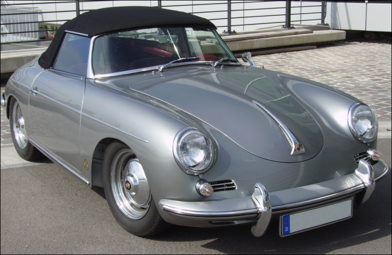
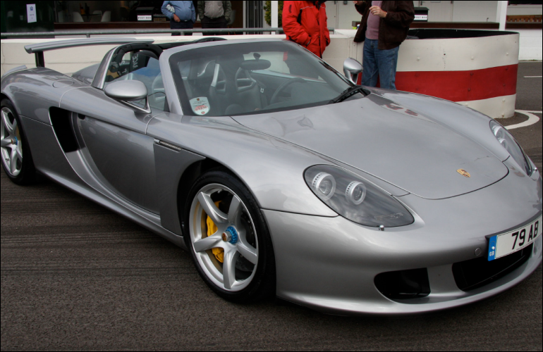

История длиной в 90 лет
К моменту выпуска первого автомобиля под своим именем Фердинанд Порше успел накопить немалый опыт. Основанное им 25 апреля 1931 года предприятие Dr. Ing. h.c. F. Porsche GmbH под его началом уже успело поработать над такими проектами, как 6-цилиндровый гоночный Auto Union и Volkswagen Käfer, ставший одним из самых продаваемых автомобилей в истории. В 1939 году был разработан первый автомобиль компании — Porsche 64, который стал прародителем всех будущих Porsche. Для постройки этого экземпляра Фердинанд Порше использовал многие компоненты от Volkswagen Käfer.


Ключевые этапы
- 1931—1948: От задумок к серийному производству
- 1948—1965: Первые шаги
- 1963—1976: Взлет 911-го и падение 914-го
- 1972—1981: Правление Эрнста Фюрманна
- 1981—1988: Вклад нового директора
- 1989—1998: Десятилетие перемен
- 1996 — наше время: Новые модели и растущий аппетит
- 1931—1948: От задумок к серийному производству
Самые знаковые модели
-

Porsche 365
Первый серийный автомобиль Porsche.
-

Porsche 911
Более мощный, комфортабельный и современный преемник модели 356. Изначально назывался Porsche 901. Но у компании Peugeot были эксклюзивные права во Франции на имена машин, образованных тремя цифрами с нулём посередине. В итоге Porsche изменили название на 911.
-

Porsche Carrera GT
Автомобиль был некоторое время быстрейшим серийным автомобилем Северной Петли Нюрбургринга - 7 минут 28 секунд. Этот результат был побит суперкаром Pagani Zonda F.
-

Porsche Tycan
Первый серийный электрокар от Порше